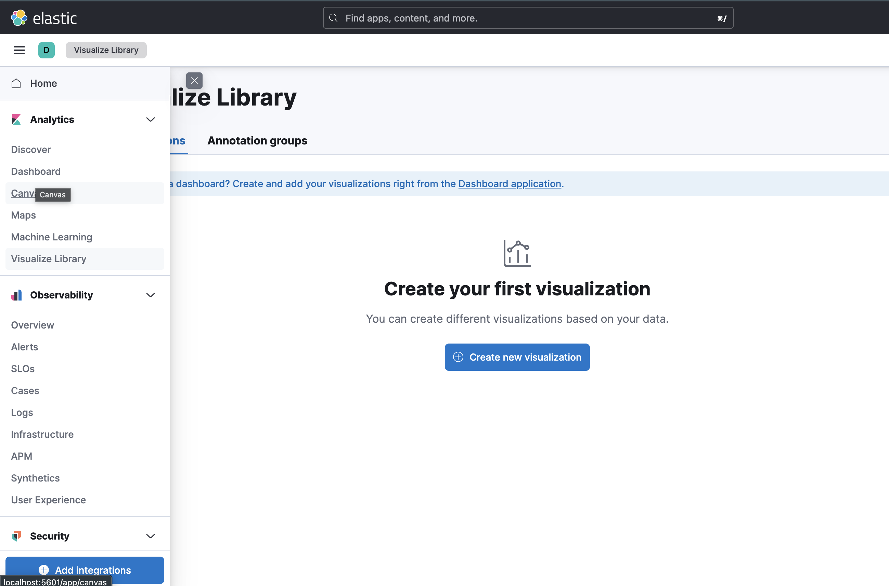
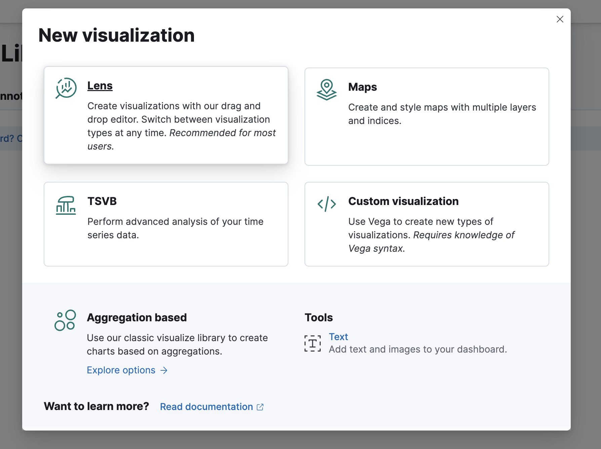
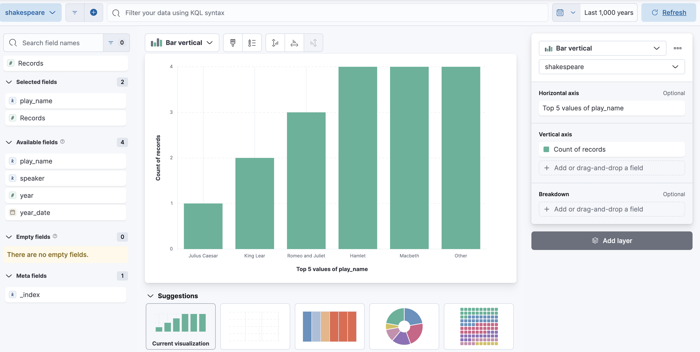

Dataset shakespeare - parcours guidé pour construire un dashboard lisible.
Important : Kibana ne crée pas l'index Elasticsearch. Il crée un Data View qui pointe vers un index existant.
Ordre correct :
shakespeare)shakespeare)GET _cat/indices/shakespeare?vGET shakespeare/_countPourquoi c'est important :
year_datePUT shakespeare/_mapping
{
"properties": {
"year_date": { "type": "date" }
}
}year_date depuis yearPOST shakespeare/_update_by_query
{
"script": {
"source": """
if (ctx._source.year != null) {
ctx._source.year_date = ctx._source.year + '-01-01T00:00:00Z';
}
"""
}
}GET shakespeare/_search
{
"size": 1,
"_source": ["year", "year_date"]
}Chemin : Stack Management -> Data Views
shakespeareshakespeareyear_date (recommandé)Si vous ne faites pas de timeline, vous pouvez Skip time field.
Analytics -> Visualize Library -> Create new visualization

Pour ce TP, choisir Lens :

Maps : cartes géographiquesTSVB : séries temporelles avancéesCustom visualization : Vega, visuels très personnalisésAggregation based : ancien éditeur orienté agrégationsText : bloc texte dans un dashboardBar verticalplay_nameCount of records
speakerCountDescending5play_nameAverage(year)Count = volume, Average = métrique calculée.
LineDate histogram(year_date)CountSi le graphique est vide : élargir le time range et vérifier le Data View.
Dans Dashboard -> Create, ajouter :
year_date créé et alimentéshakespeare prêt